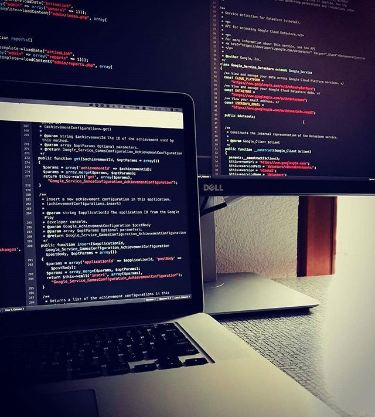

<!DOCTYPE html>
<html></html>
<head>
    <title>Html Workshop</title>
<h2>ABOUT</h2>
</head>
  
</br><section>
     <div>
        <p><br>
      
        It made this experience very interactive. Some errors were very frustrating along the line but we pulled through every bit of it.We beagan with the freecodecamp software where we followed a series of curriculum activities in the software. They included the the responsive web design course which took us through a basic headstart to building a cat photo application website using these tags.
        We encountered a lot of adverse ways to build a robust website using links, photos and text.
        A lot of problems were also encountered on the freecodecamp journey.
        Errors being made in the website preparation were spotted by the software.
        It made this experience very interactive. Some errors were very frustrating along the line but we pulled through every bit of it.We beagan with the freecodecamp software where we followed a series of curriculum activities in the software. They included the the responsive web design course which took us through a basic headstart to building a cat photo application website using these tags.
        We encountered a lot of adverse ways to build a robust website using links, photos and text.
        A lot of problems were also encountered on the freecodecamp journey.
        Errors being made in the website preparation were spotted by the software.
        It made this experience very interactive. Some errors were very frustrating along the line but we pulled through every bit of it.We beagan with the freecodecamp software where we followed a series of curriculum activities in the software. They included the the responsive web design course which took us through a basic headstart to building a cat photo application website using these tags.
        We encountered a lot of adverse ways to build a robust website using links, photos and text.
        A lot of problems were also encountered on the freecodecamp journey.
        Errors being made in the website preparation were spotted by the software.
        It made this experience very interactive. Some errors were very frustrating along the line but we pulled through every bit of it.We beagan with the freecodecamp software where we followed a series of curriculum activities in the software. They included the the responsive web design course which took us through a basic headstart to building a cat photo application website using these tags.
        We encountered a lot of adverse ways to build a robust website using links, photos and text.
